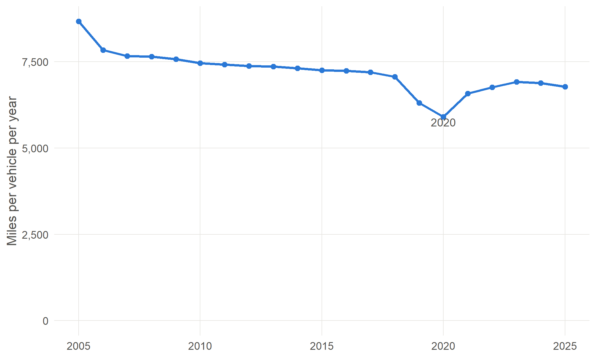

1 The MOT test
Almost everything in the CARS data starts with the MOT test. Each test records a vehicle’s odometer reading and where it was tested, and it is the sequence of tests over a vehicle’s life that lets us estimate how far it is driven each year and where it is kept. Understanding when vehicles are tested, and when they are not, is the key to understanding the data.
1.1 What the MOT test is
The MOT test is the annual roadworthiness check required for most vehicles in Great Britain once they reach three years old. The name comes from the Ministry of Transport, which introduced the test in 1960. At first it applied only to vehicles ten years old or more; the age was lowered in stages, and the first test has been due at three years since 1967.
The test checks that a vehicle meets minimum legal standards for safety and exhaust emissions at the time of the test: brakes, lights, steering, suspension, tyres, seatbelts, structure, emissions and so on. It does not check the general mechanical condition of the engine, clutch or gearbox. Tests are carried out by around 23,000 privately run garages approved as MOT testing stations, under rules set and enforced by the Driver and Vehicle Standards Agency (DVSA; see Chapter 2).
Driving a vehicle that needs an MOT without a valid certificate is an offence, and a valid MOT is required to tax a vehicle. That link to vehicle tax is what makes the MOT such a complete record of the vehicles in use.
1.2 What a test records
Since 2005 every MOT test in Great Britain has been recorded electronically. For research the important items are:
| Item | Why it matters |
|---|---|
| Date of the test | Places the vehicle in time; the gaps between tests define the periods over which mileage is measured |
| Odometer reading | The distance the vehicle has travelled; the difference between two tests gives the distance driven between them |
| Test result | Pass or fail. A failed vehicle is usually retested within days, so a vehicle can have several tests in a year |
| Testing station | Where the vehicle was tested. The anonymised data releases the postcode area of the station (Chapter 7) |
| Test class | The kind of vehicle being tested (Chapter 3) |
| Vehicle details | Make, model, fuel, engine size, colour and first-use date, as held on the DVSA’s records |
ImportantPitfall: the place is the testing station, not the keeper’s home
The postcode area attached to a vehicle in a year is the area of the garage where it was tested. Most people use a garage near home or work, so this is a good guide to where vehicles are kept, but it is not an address. Vehicles kept near the edge of a postcode area, company fleets serviced centrally, and people who have their car tested near work rather than home all blur the picture. See Chapter 7 and Chapter 14.
1.3 When a vehicle is tested
The first test
In Great Britain, cars, vans and motorcycles have their first MOT on the third anniversary of their first registration. Some vehicles are tested from their first birthday instead, notably taxis, private hire vehicles, ambulances and passenger vehicles with more than eight passenger seats (Table 3.1 in Chapter 3). In Northern Ireland the first test is at four years.
This has a large effect on the data. For its first three years a vehicle is on the DVLA register, but it has no MOT test. Once it has its first test, the annualisation fills in those early years from it (Chapter 6), so in hindsight the vehicle appears from its first registration. Vehicles that have not yet had a first test have no location at all, which is why the newest vehicles are missing from the last three years of the data. A vehicle that is tested before it is three is usually a taxi, a private hire car or a vehicle with an unusual history, and is driven much further than most.
Later tests
After the first test, a vehicle is tested every year. A vehicle can be tested up to a month (minus a day) before its current certificate expires and keep the same renewal date, so most vehicles are tested at about the same time each year. In practice the intervals vary: tests are taken early or late, failed tests are repeated, and vehicles are taken off the road for a while and then tested again when they return.
NoteTo be written
A short description, with a figure, of the observed distribution of intervals between consecutive tests (from the analysis of test intervals for the linkage stage). The early draft has a heat map of interval start against interval end for 2017–2023, showing the strong annual diagonal, the 2020 disruption and a tail of long gaps.
Vehicles that do not need an MOT
Some vehicles never appear, or stop appearing, in the MOT data even though they are on the road:
- Heavy goods vehicles, large buses and coaches, and trailers take a separate annual test run by DVSA, not an MOT. They are largely absent from the CARS data, which is why it describes cars, vans and motorcycles well and heavier vehicles poorly.
- Historic vehicles. Since May 2018, most vehicles made more than 40 years ago, and not substantially changed, are exempt. Older vehicles therefore disappear from the MOT data even if they are still driven.
- Some other vehicles are exempt, such as tractors and some electric goods vehicles registered before March 2015.
Vehicles declared off the road (SORN), exported or scrapped also stop being tested; Chapter 6 explains how the data handles them.
1.4 Disruptions to testing
COVID-19 in 2020
From 30 March 2020, cars, vans and motorcycles whose MOT was due were given a six-month extension, so many vehicles that would normally have been tested in spring and early summer 2020 were not tested until late 2020 or 2021. Vehicles due from 1 August 2020 needed a test again as normal.
Combined with the fall in travel during the lockdowns, this makes 2020 the most unusual year in the data. The fall in average mileage is real, but how it is spread between 2019, 2020 and 2021 depends on how the distance between two tests is shared across the years they span (Chapter 8).
Northern Ireland
Northern Ireland has its own testing system, run by the Driver & Vehicle Agency (DVA) at government test centres rather than private garages. In early 2020, before the pandemic, faults found in the vehicle lifts at the test centres led the DVA to suspend many tests and issue temporary exemption certificates, and the pandemic then disrupted testing further. Northern Ireland vehicles are in the CARS data (coded NI), but their test records are less complete than those for Great Britain and their test class is not supplied (Chapter 13).
NoteTo be written
Dates and scale of the Northern Ireland exemptions, and how Northern Ireland test data reaches the DVSA datasets.
1.5 What this means for the data
- The MOT data is a near-complete record of cars, vans and motorcycles aged three and over that are in use.
- It largely misses heavy vehicles, historic vehicles and vehicles kept off the road, and, in the last three years of the data, new vehicles that have not yet had their first test.
- Location is that of the testing station.
- Mileage is measured between tests, so it is known only for periods that have a test at each end, and has to be shared out across calendar years.
1.6 Further reading
- Getting an MOT (GOV.UK)
- MOT inspection manuals (DVSA)
- Historic (classic) vehicles: MOT and vehicle tax (GOV.UK)